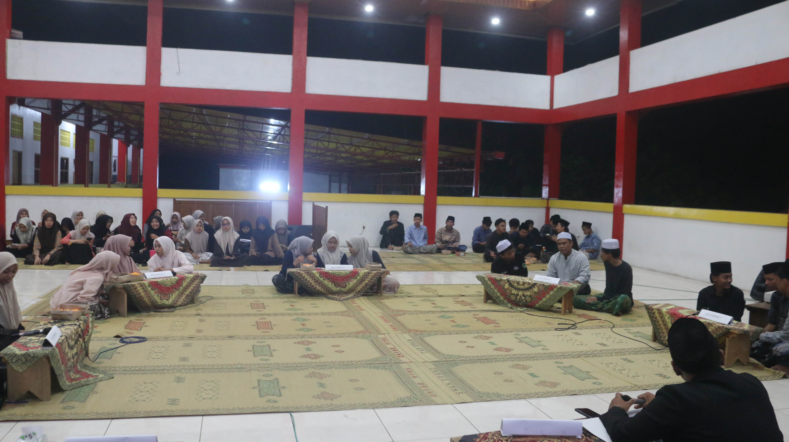

Kegiatan Harian
Kegiatan harian di Pondok Pesantren Annashiiha Salatiga disusun untuk membentuk pola kehidupan santri yang religius, disiplin, mandiri, dan produktif. Aktivitas santri memadukan kegiatan ibadah, pembelajaran keagamaan, pendidikan formal, serta pengembangan keterampilan.
- Sahur bersama (saat puasa sunnah/Ramadhan)
- Shalat Subuh berjamaah
- Pengajian pagi / kajian kitab (Ta'limul Muta'allim) hingga pukul 06.00 WIB
- Pembelajaran formal di sekolah/kampus bagi santri pelajar/mahasiswa
- Praktik kewirausahaan (pemasaran digital dan wirausaha mandiri)
- Pengajian sore dan tadarus Al-Qur'an
- Pengajian malam setelah sholat Isya'
Ekstrakurikuler
Selain kegiatan pendidikan utama, Pondok Pesantren Annashiiha juga menyediakan berbagai kegiatan ekstrakurikuler sebagai wadah bagi santri untuk mengembangkan keterampilan, minat, bakat, dan kemampuan keagamaan.
Kewirausahaan
Khususnya digital marketing dan entrepreneurship.
Seni Sholawat
Sarana pengembangan seni dan kecintaan terhadap syiar Islam.
Tahfidz Al-Qur'an
Kegiatan untuk meningkatkan kemampuan santri dalam menghafal dan menjaga hafalan Al-Qur'an.
Sorogan Kitab
Bagian dari pendalaman ilmu keagamaan melalui metode pembelajaran khas pesantren.

Kegiatan santri Pondok Pesantren AnnashiihaOrganisasi
Kehidupan dan kegiatan santri di Pondok Pesantren Annashiiha turut didukung oleh kepengurusan santri. Pengelolaan kegiatan pesantren melibatkan pengurus pondok maupun mahasiswa yang diberikan tanggung jawab dalam membantu mengatur berbagai aktivitas dan kebutuhan santri.
Kepengurusan tersebut menjadi sarana bagi santri untuk belajar mengenai kepemimpinan, tanggung jawab, kedisiplinan, kerja sama, dan pengelolaan kegiatan dalam kehidupan pesantren.
Prestasi
Pondok Pesantren Annashiiha Salatiga memiliki sejumlah pencapaian dan keunggulan yang menjadi bagian dari identitas lembaga, khususnya dalam bidang toleransi, akulturasi budaya, dan pengembangan kewirausahaan. Beberapa di antaranya meliputi:
- Ditetapkan sebagai Ikon Toleransi dan Akulturasi Budaya di Kota Salatiga, sejalan dengan keberadaan kompleks Masjid Klenteng yang menjadi bagian dari karakteristik pondok.
- Pelopor Pesantren Entrepreneur Digital di wilayah Salatiga, melalui pengembangan pendidikan kewirausahaan yang memanfaatkan media digital dan pemasaran melalui media sosial.
- Menjadi salah satu destinasi rujukan studi banding mengenai keberagaman, toleransi, dan kewirausahaan bagi berbagai perguruan tinggi.